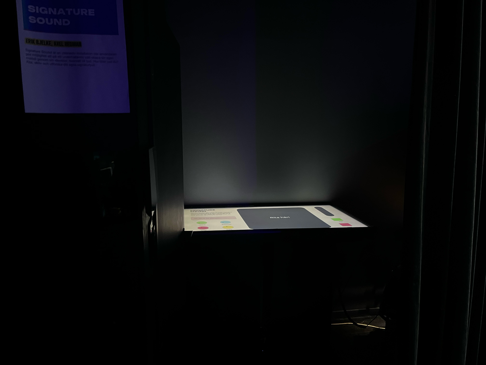
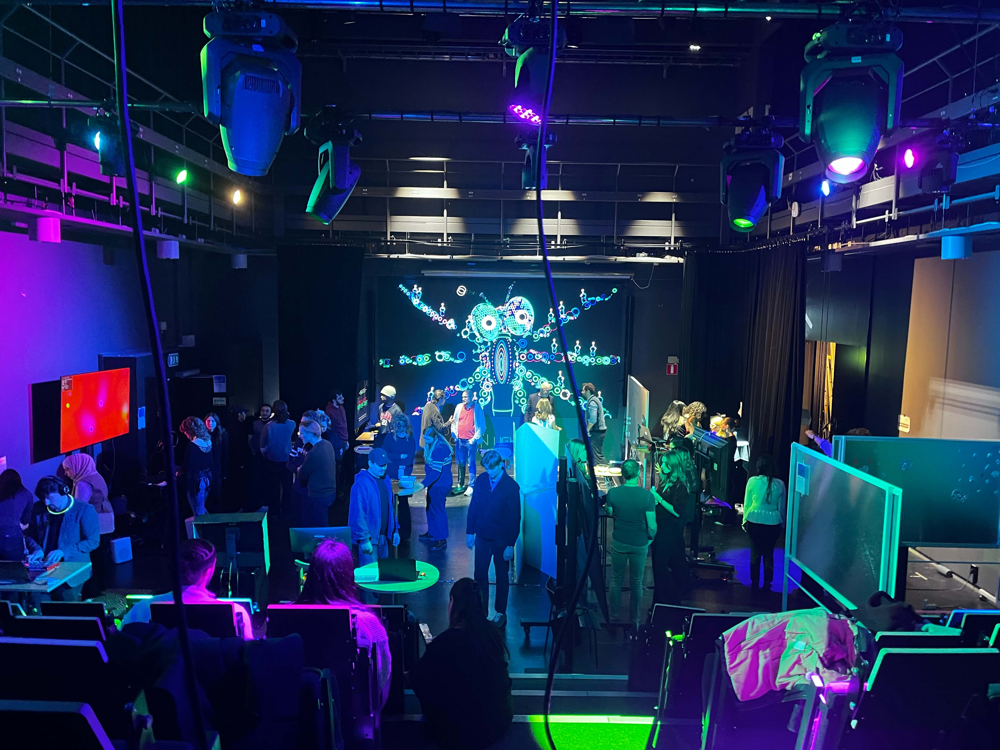
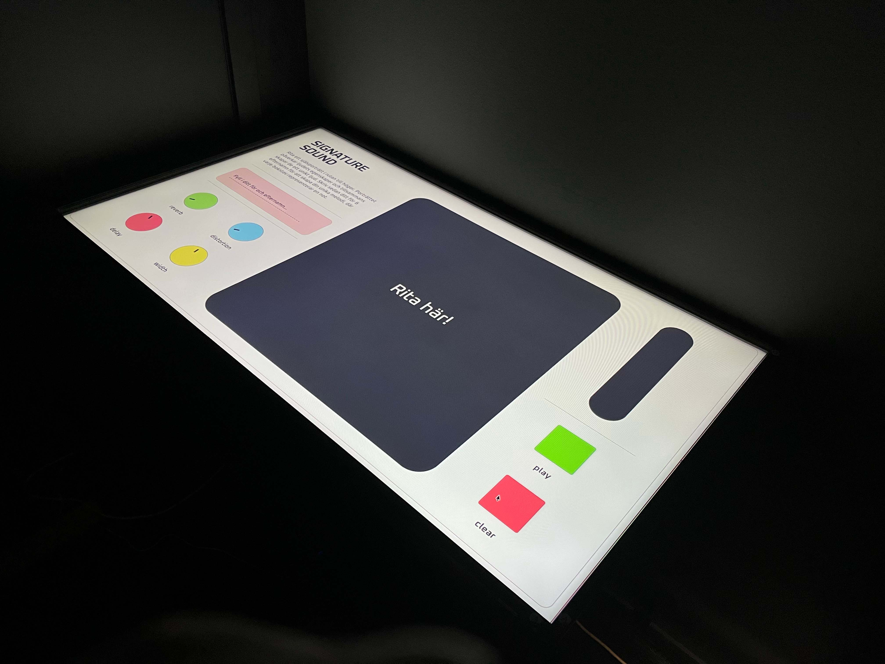
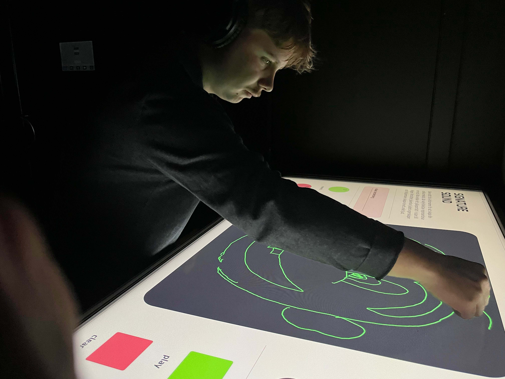
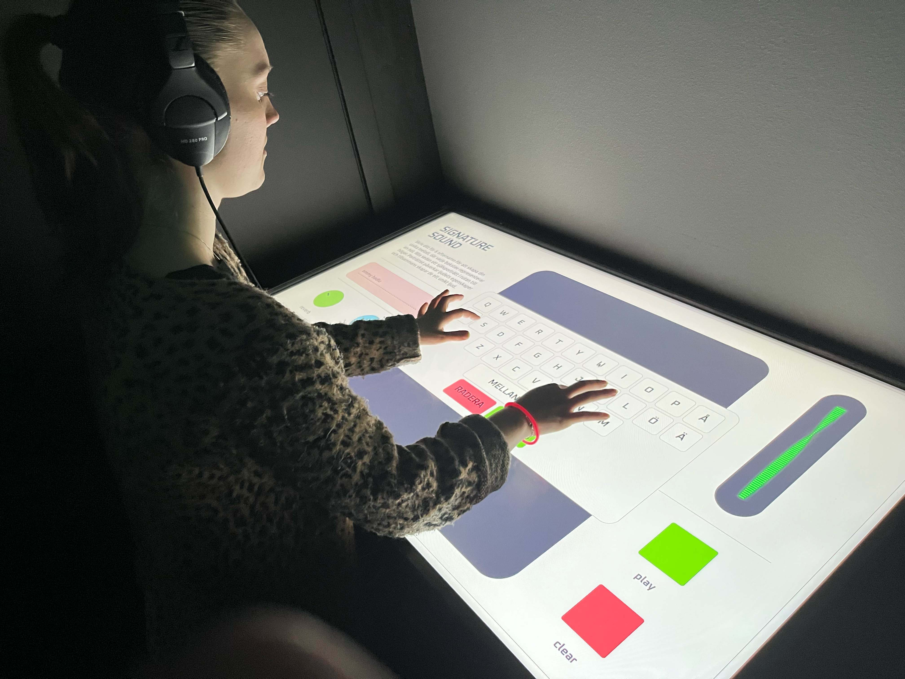

Erik Bjelke
Medieteknikstudent vid Södertörns högskola. Projekt i kreativ programmering tillsammans med Axel Hedman, inspirerat av hur musik och teknik kan kombineras samt egna intressen. Installationen visades för besökare i högskolans lokal, där de själva kunde interagera och testa installationen.
Om projektet
Signature Sound är en interaktiv installation där användaren ges möjlighet att på ett underhållande sätt skapa sin egen melodi genom sin identitet, översatt till ljud. Hur låter just du? Rita, skriv och utforska ditt egna signaturljud. Se bilder från uställningen nedan och få en bättre förståelse för användningen.




